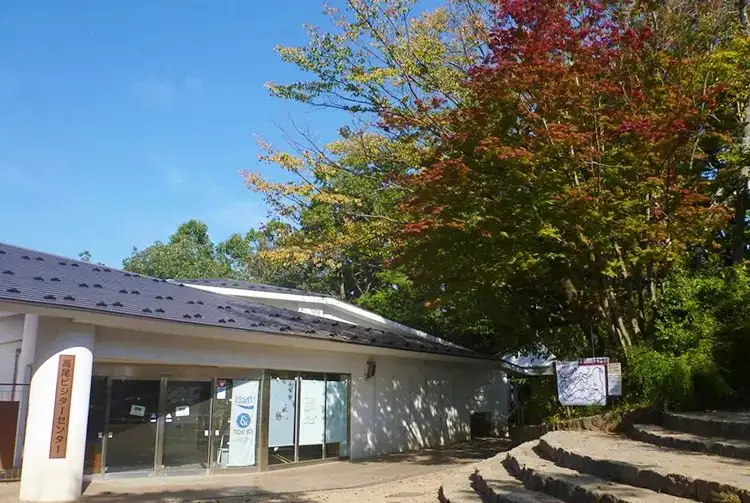
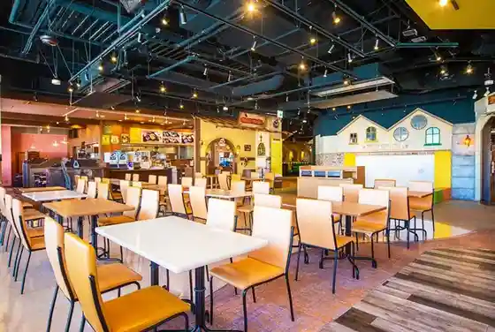
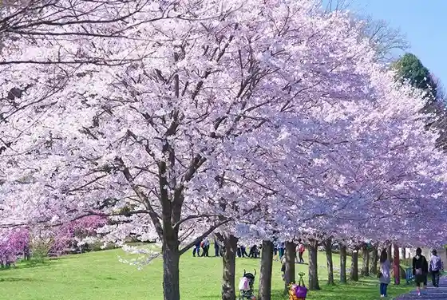

Hachioji
Hachioji · Tokyo
Hachioji
Highlighted on the Tokyo map.

Sights
Takao Bijita Center
Konikami no Ruta Saiensudomu (Hachioji Kodomo Science Museum)
Hino Oto Plaza
Minamiosawaeki Mae Dainingu Tokyo Miitorea

Katakura Castle Ruins Park

Mitsui Autoretto Park Tama Minamiosawa
Naganuma Park
Yamaimo Oin
Itcho Taira (Takaozan)
Takaozan
Keio Takaozan Onsen / Gokuraku Yu
Tama Shinrin Kagaku Sono